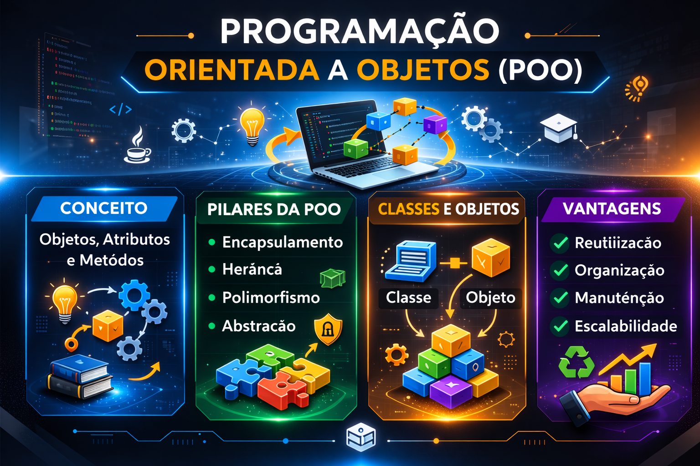

Bem-vindo!
Este site apresenta os principais conceitos da Programação Orientada a Objetos (POO). Navegue pelo menu acima para aprender sobre conceito, pilares, classes, objetos e vantagens.

Este site apresenta os principais conceitos da Programação Orientada a Objetos (POO). Navegue pelo menu acima para aprender sobre conceito, pilares, classes, objetos e vantagens.